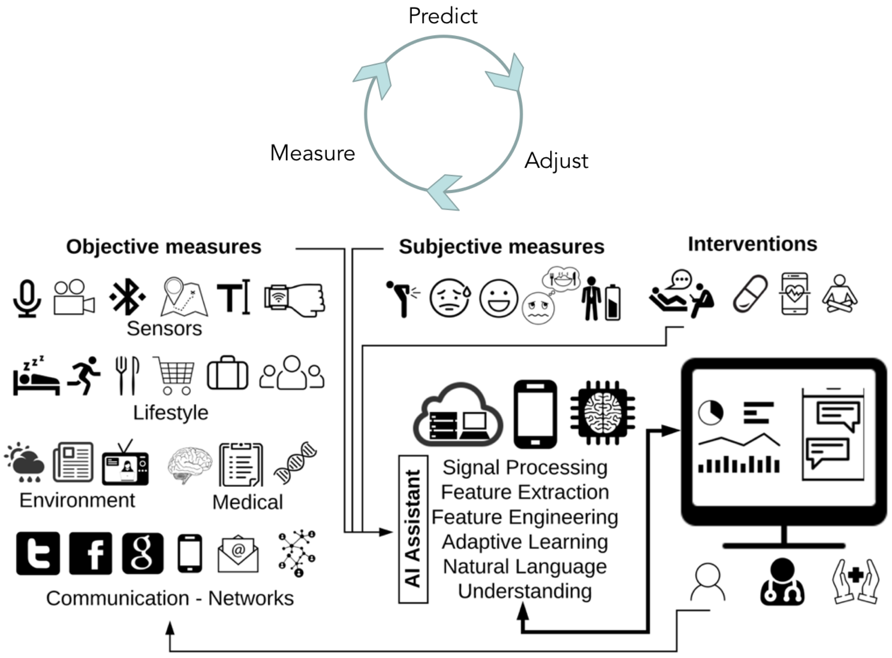
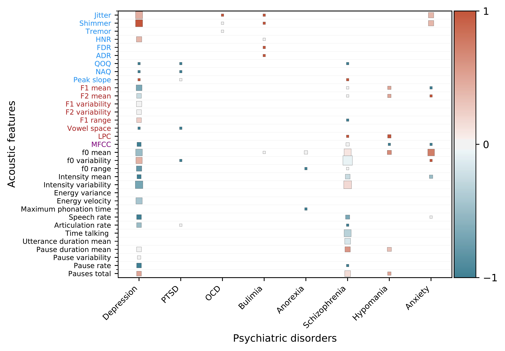

Research

A fundamental problem in psychiatry is that there are no biological markers for diagnosing mental illness or for indicating how best to treat it. Treatment decisions are based entirely on symptoms, and doctors and their patients will typically try one treatment, then if it does not work, try another, and perhaps another. Our group hopes to change this picture, and our research suggests that individual brain scans and speaking patterns can hold valuable information for guiding psychiatrists and patients. Current areas include depression, suicide, anxiety disorders, autism, Parkinson disease, and brain tumors.
To support this broader goal, our group develops novel analytic platforms that use such information to create robust, predictive models around human health. We believe that solving this problem will require complex integration of different types of sensors into an adaptive learning system together with patient, caregiver, and community feedback.
Our research interests span computer science and neuroscience, specifically in the areas of applied machine learning, signal processing, and translational medicine. Our current research portfolio comprises projects on spoken communication, brain imaging, and informatics to address gaps in scientific knowledge in three areas: the neural basis and translational applications of speaking, precision psychiatry and medicine, and preserving information for reproducible research.
Many of the tools we develop can be used across domains. If you have a need we can address, we would like to hear from you.
If you have solved problems associated with any of the projects below, we would love to hear from you. For us, a solution typically implies available data, code, and/or replicated results.
Highlights
For a full list see below

A data and AI coordination center for the BRAIN Initiative Brain Behavior Quantification and Synchronization (BBQS) program. Supported by NIMH U24MH136628 (PIs: Ghosh, Cabrera, Kennedy).
BBQS team (MIT, Penn State, UMass-Medical, JHU/APL, UCBerkeley/LBNL)

A platform for data ingestion, search, and computing targeted towards cellular neurophysiology. Supported by NIMH R24MH117295 (PI: Ghosh and Halchenko).
DANDI team (MIT, Dartmouth, Kitware)

Develop an extensible Brain Cell Knowledge Base (BCKB) to ingest and standardize c omprehensive cell type information from BICAN’s development of a multimodal, multi-species brain cell atlas and disseminate that atlas as an open and interactive community resource for advancing knowledge of the brain. Supported by NIMH 1U24MH130918 (PI: Mufti, Hawrylycz, Ng, and Ghosh).
BICAN team (Allen Institute for Brain Science, MIT)

A Center dedicated to improving reproducibility in neuroimaging through the development of products designed to enhance efficiency and provenance tracking within laboratories and in collaboration with external stakeholders such as data archives and publishers. Supported by NIBIB P41 EB019936 (PI: David Kennedy, UMass Medical School).
ReproNim team

The goal of this project is to observe and analyze speech variations in across disorders by analyzing different types of data including ecological momentary assessments, recordings of clinical interviews, and social media posts. Key questions we hope to answer are: 1) Is speech a good longitudinal biomarker? 2) How much speech information is needed for stable tracking? 3) Can linguistic information augment voice models?
Isaac Bevers, Kaley Jenny, Rahul Brito, Jordan Wilke, Miles Silva, Fabio Catania
Full List
BBQS AI Resource and Data Coordinating Center
BBQS team (MIT, Penn State, UMass-Medical, JHU/APL, UCBerkeley/LBNL)
A data and AI coordination center for the BRAIN Initiative Brain Behavior Quantification and Synchronization (BBQS) program. Supported by NIMH U24MH136628 (PIs: Ghosh, Cabrera, Kennedy).
DANDI: Distributed Archives for Neurophysiology Data Integration
DANDI team (MIT, Dartmouth, Kitware)
A platform for data ingestion, search, and computing targeted towards cellular neurophysiology. Supported by NIMH R24MH117295 (PI: Ghosh and Halchenko).
Project website.
BICAN Knowledgebase for neuroscience
BICAN team (Allen Institute for Brain Science, MIT)
Develop an extensible Brain Cell Knowledge Base (BCKB) to ingest and standardize c omprehensive cell type information from BICAN’s development of a multimodal, multi-species brain cell atlas and disseminate that atlas as an open and interactive community resource for advancing knowledge of the brain. Supported by NIMH 1U24MH130918
(PI: Mufti, Hawrylycz, Ng, and Ghosh).
Project website.
Nobrainer: A Robust And Validated Neural Netwrok Tool Suite For Imagers
Nobrainer team (MIT, MGH, GSU)
Develop an open Python library to simplify integrating deep learning into neuroimaging research. We will build and distribute user-friendly and cloud enabled end-user applications for the neuroimaging community.
Project summary from NIH.
ReproNim: A Center for Reproducible Neuroimaging Computation
ReproNim team
A Center dedicated to improving reproducibility in neuroimaging through the development of products designed to enhance efficiency and provenance tracking within laboratories and in collaboration with external stakeholders such as data archives and publishers. Supported by NIBIB P41 EB019936 (PI: David Kennedy, UMass Medical School).
Read more about ReproNim
Naturalistic Parcellation and audiovisual integration
Jeff Mentch
A Neuroscout project to generate cortical parcellations using naturalistic (movie viewing) neuroimaging datasets.
Project details
Voice and language biomarkers of health
Isaac Bevers, Kaley Jenny, Rahul Brito, Jordan Wilke, Miles Silva, Fabio Catania
The goal of this project is to observe and analyze speech variations in across disorders by analyzing different types of data including ecological momentary assessments, recordings of clinical interviews, and social media posts. Key questions we hope to answer are: 1) Is speech a good longitudinal biomarker? 2) How much speech information is needed for stable tracking? 3) Can linguistic information augment voice models?
Project details
Mumble Melody: Musically Modulated Auditory Feedback to Increase Fluency for People Who Stutter
R Kleinberger, A Kodibagkar, M Vemuri
The aim of this project is to explore assistive technologies to help increase fluency for people who stutter. Our studies investigate the use of Altered Auditory Feedback (AAF), a stuttering intervention in which an individual’s speech is played back to them in an altered manner. Below are further details about this project as well as a page about our study.
Project details